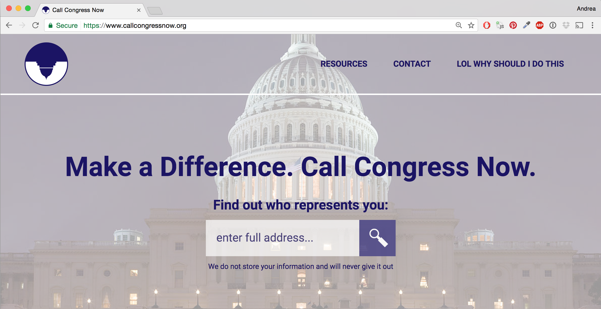

CASE STUDY: Call Congress Now
Call Congress Now is a responsive web app I designed and co-developed. Its purpose is to encourage citizens to call their Representatives and Senators for issues they care about. The app provides calling information in a user-friendly way.
The Design Process: Key Steps
Call Congress Now was a challenging but rewarding app to design and build. I have included key points in the design process below.
Discovery
In the weeks following election night, I vowed to get more involved in politics. I came across long Twitter threads about the impact of picking up the phone and calling Congress.
My friend and I started looking into how to go about contacting Congress. We were startled by how little information about it existed at the time. Then we realized we could change that.
Defining The Idea
We decided to make a responsive web app that would provide a solution to the following questions:
- What would a user-friendly app with calling information look like?
- How do we motivate our peers to pick up the phone?
- Here is a storyboard I created by hand to help define the types of users our app was targeting:
User Research
While designing, I conducted informal interviews with family, friends, and friendly-looking strangers at coffee shops. I wanted to know what motivated them to care about politics, but, similar to me prior to the election, stopped them from getting more involved.
Here was the general consensus:
- “I don’t know what specific actions I can take besides voting and donating to causes I care about”
- “I only want to consider options that aren’t a huge time sink”
- “I want to know that my actions will mean something”
Conclusion: A lot of people wanted to get more involved, but they needed more information. We realized that it wouldn’t be enough to just build functionality to easily find phone numbers. We also needed to include resources to answer the question, “Why should I do this?”
Design
During the design phase, I created the following:
- Quick paper/pencil wireframes
- High-fidelity mockups using Adobe Illustrator
- HTML/SCSS prototypes
- Branding, such as defining the color scheme, finding a background hero photo, and sketching out an icon (which was inspired by the upside-down flag from House of Cards).
color palette
hero image
Source: Wikipedia
icon

Development & Testing
During the development phase, I continued to work on the HTML/SCSS, including media queries to make the site mobile-friendly. I relied on my back-end-savvy friend to hook up the front-end with the back-end and to set up Google Analytics.
Here is what we are tracking in Google Analytics:
- January Page Views: 775
- January Bounce Rate: 70%
Next Steps
Analytics Results: Google Analytics is telling us that we still don’t have enough traffic to the site overall, as indicated by our dismal number of Page Views. Additionally, our average Bounce Rate in January was also terrible, which means we need to do more content work.
Here is our tentative plan:
- Add more resource links; re-design resource section
- De-emphasize memes
- Add district numbers for Senators and Representatives (this is something that could differentiate us from similar sites)
- Add social media links to footer; make a plan for increasing social media outreach